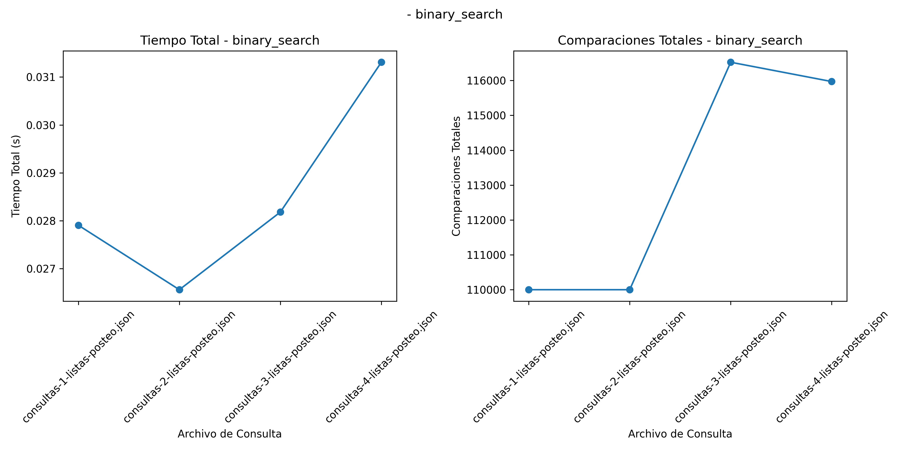
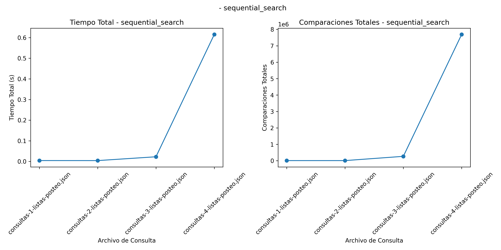
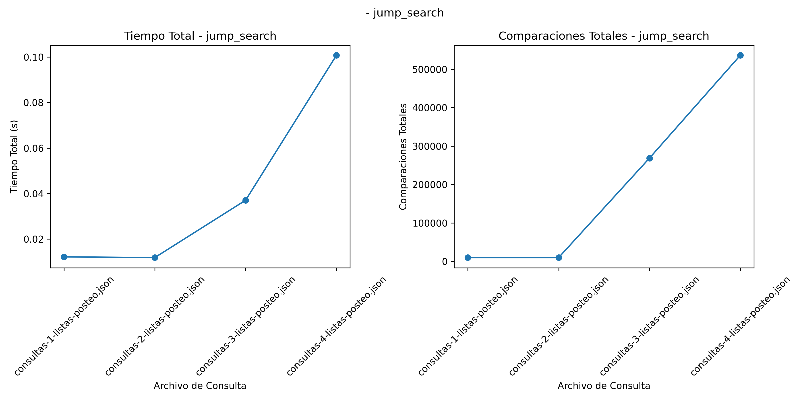
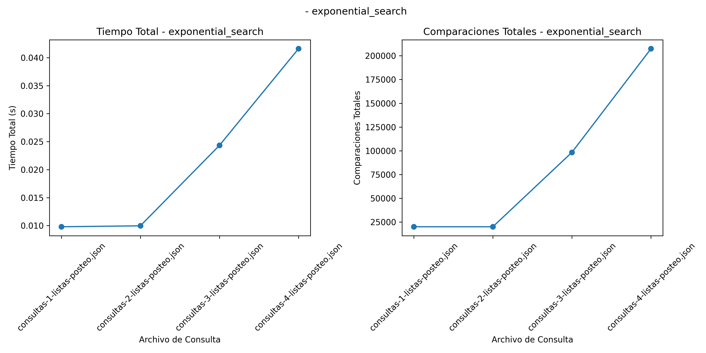
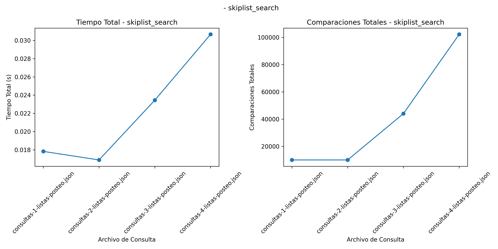

El análisis experimental de algoritmos de búsqueda es esencial para optimizar la recuperación de información en diversas aplicaciones, desde bases de datos hasta sistemas de archivos distribuidos. Este reporte se enfoca en la implementación y comparación de cinco algoritmos de búsqueda distintos: Búsqueda Binaria Acotada, Búsqueda Secuencial B0, Búsqueda No Acotada B1, Búsqueda No Acotada B2, y Búsqueda basada en la estructura de datos SkipList.
La eficiencia de un algoritmo de búsqueda puede medirse en términos de tiempo de ejecución y número de comparaciones realizadas. Este análisis permitirá identificar cuáles de los algoritmos son más adecuados para diferentes tipos de datos y consultas, considerando tanto la eficiencia temporal como la eficiencia en cuanto a número de operaciones realizadas.
7 Metodología
Se implementarán y compararán los siguientes algoritmos de búsqueda:
Búsqueda Binaria Acotada: Un algoritmo eficiente para listas ordenadas. Su complejidad promedio es \(O(\log n)\).
Búsqueda Secuencial B0: Algoritmo simple que revisa cada elemento de la lista secuencialmente. Su complejidad promedio es \(O(n)\).
Búsqueda No Acotada B1: Algoritmo que comienza con un paso pequeño y lo incrementa exponencialmente hasta que se encuentra el elemento o se excede el rango.
Búsqueda No Acotada B2: Algoritmo que emplea saltos de tamaño fijo para dividir la búsqueda en segmentos, seguido de una búsqueda lineal dentro del segmento correspondiente.
Búsqueda mediante SkipList: Aprovecha la estructura de listas enlazadas con múltiples niveles para optimizar las operaciones de búsqueda.
Se utilizarán archivos con diferentes distribuciones de datos para evaluar el rendimiento de cada algoritmo. Cada consulta se medirá en términos de:
Tiempo de ejecución.
Número de comparaciones realizadas.
8 Implementación de los algoritmos
Código
import timeimport jsonimport randomimport pandas as pdimport matplotlib.pyplot as pltfrom typing import List, Tuple, Dict# Búsqueda Binaria Acotada con rangodef binary_search_range(arr: List[int], left: int, right: int, target: int) -> Tuple[bool, int]: comparisons =0while left <= right: comparisons +=1 mid = (left + right) //2if arr[mid] == target:returnTrue, comparisonselif arr[mid] < target: left = mid +1else: right = mid -1returnFalse, comparisons# Búsqueda Secuencial B0 (ordenada)def sequential_search(arr: List[int], target: int) -> Tuple[bool, int]: comparisons =0for element in arr: comparisons +=1if element == target:returnTrue, comparisonselif element > target:returnFalse, comparisonsreturnFalse, comparisons# Búsqueda No Acotada B1 (Saltos)def jump_search(arr: List[int], target: int) -> Tuple[bool, int]: n =len(arr) step =int(n **0.5) prev =0 comparisons =0while prev < n and arr[min(prev + step, n) -1] < target: comparisons +=1 prev += stepfor idx inrange(prev, min(prev + step, n)): comparisons +=1if arr[idx] == target:returnTrue, comparisonselif arr[idx] > target:returnFalse, comparisonsreturnFalse, comparisons# Búsqueda No Acotada B2 (Exponencial)def exponential_search(arr: List[int], target: int) -> Tuple[bool, int]: n =len(arr) comparisons =1if arr[0] == target:returnTrue, comparisons index =1while index < n and arr[index] < target: comparisons +=1 index *=2 left = index //2 right =min(index, n -1) found, binary_comparisons = binary_search_range(arr, left, right, target)return found, comparisons + binary_comparisons# Clase SkipListclass Node:def__init__(self, key, level):self.key = keyself.forward = [None] * (level +1)class SkipList:def__init__(self, max_level=16, p=0.5):self.max_level = max_levelself.p = pself.header = Node(-1, max_level)self.level =0def random_level(self): lvl =0while random.random() <self.p and lvl <self.max_level: lvl +=1return lvldef insert(self, key): update = [None] * (self.max_level +1) current =self.headerfor i inrange(self.level, -1, -1):while current.forward[i] and current.forward[i].key < key: current = current.forward[i] update[i] = current lvl =self.random_level()if lvl >self.level:for i inrange(self.level +1, lvl +1): update[i] =self.headerself.level = lvl node = Node(key, lvl)for i inrange(lvl +1): node.forward[i] = update[i].forward[i] update[i].forward[i] = nodedef search(self, key) -> Tuple[bool, int]: current =self.header comparisons =0for i inrange(self.level, -1, -1):while current.forward[i] and current.forward[i].key < key: comparisons +=1 current = current.forward[i] current = current.forward[0] comparisons +=1if current and current.key == key:returnTrue, comparisonsreturnFalse, comparisons# Función para cargar archivos JSONdef load_data(file_path: str) -> List[int]:withopen(file_path, 'r') as f: data = json.load(f)return data['reunion']def load_queries(file_path: str) -> List[int]:withopen(file_path, 'r') as f: data = json.load(f)ifisinstance(data, list):return dataelif'queries'in data:return data['queries']else:raiseValueError("Formato desconocido para el archivo de consultas")def evaluate_search_methods(data_file: str, query_file: str) -> pd.DataFrame: data = load_data(data_file) queries = load_queries(query_file) methods = {'binary_search': binary_search_range,'sequential_search': sequential_search,'jump_search': jump_search,'exponential_search': exponential_search,'skiplist_search': SkipList().search } results = []for method_name, method in methods.items(): total_time =0 total_comparisons =0if method_name =='skiplist_search': skiplist = SkipList()for item in data: skiplist.insert(item)for query in queries: start_time = time.time()if method_name =='skiplist_search': _, comparisons = skiplist.search(query)elif method_name =='binary_search': _, comparisons = method(data, 0, len(data) -1, query)else: _, comparisons = method(data, query) elapsed_time = time.time() - start_time total_time += elapsed_time total_comparisons += comparisons results.append([method_name, query_file, total_time, total_comparisons]) df_results = pd.DataFrame(results, columns=['Algoritmo', 'Archivo de Consulta', 'Tiempo Total', 'Comparaciones Totales'])return df_resultsdef accumulate_results(data_files: List[str], query_files: List[str]) -> pd.DataFrame: all_results = pd.DataFrame()for data_file in data_files:for query_file in query_files: df_results = evaluate_search_methods(data_file, query_file) all_results = pd.concat([all_results, df_results], ignore_index=True)return all_resultsdef plot_results_per_algorithm(df: pd.DataFrame, title: str, filename: str): algorithms = df['Algoritmo'].unique()for algorithm in algorithms: subset = df[df['Algoritmo'] == algorithm] plt.figure(figsize=(12, 6))# Plot Tiempo Total por archivo de consulta plt.subplot(1, 2, 1) plt.plot(subset['Archivo de Consulta'], subset['Tiempo Total'], marker='o') plt.title(f'Tiempo Total - {algorithm}') plt.xlabel('Archivo de Consulta') plt.ylabel('Tiempo Total (s)') plt.xticks(rotation=45)# Plot Comparaciones Totales por archivo de consulta plt.subplot(1, 2, 2) plt.plot(subset['Archivo de Consulta'], subset['Comparaciones Totales'], marker='o') plt.title(f'Comparaciones Totales - {algorithm}') plt.xlabel('Archivo de Consulta') plt.ylabel('Comparaciones Totales') plt.xticks(rotation=45) plt.suptitle(f'{title} - {algorithm}') plt.tight_layout() plt.savefig(f'{filename}_{algorithm}.png') plt.show()def generate_latex_table(df: pd.DataFrame, filename: str): latex_table = df.to_latex(index=False)withopen(filename, 'w') as f: f.write(latex_table)# Archivos de datos y consultasdata_files = ["P=016.json"]query_files = ["consultas-1-listas-posteo.json", "consultas-2-listas-posteo.json", "consultas-3-listas-posteo.json", "consultas-4-listas-posteo.json"]for query_file in query_files: df_results = accumulate_results(data_files, query_files) plot_results_per_algorithm(df_results, f" ", f"result_{data_files}_{query_file}.png") generate_latex_table(df_results, f"result_{data_files}_{query_file}.tex")
9 Análisis de Resultados
En este análisis se evaluaron cinco algoritmos de búsqueda utilizando cuatro archivos de consultas con diferentes distribuciones de datos. Los algoritmos evaluados fueron: Búsqueda Binaria Acotada, Búsqueda Secuencial, Búsqueda No Acotada (Saltos y Exponencial) y Búsqueda con SkipList. Las gráficas generadas (Figs. 1-5) presentan el Tiempo Total de Ejecución y el Número Total de Comparaciones para cada algoritmo en función del archivo de consulta utilizado.
La Tabla 1 muestra los tiempos promedio de ejecución y Número de comparaciones para cada algoritmo y cada conjunto de datos
9.1 Comparación de tiempos de ejecución
El tiempo de ejecución es un criterio esencial para evaluar la eficiencia de los algoritmos de búsqueda, especialmente cuando se aplican a grandes volúmenes de datos. Según (Cormen et al. 2009a) y (Sedgewick y Wayne 2011a), la eficiencia de un algoritmo puede ser evaluada por su complejidad computacional, pero también debe considerarse el costo constante asociado a cada operación (Knuth 1998a).
Búsqueda Binaria Acotada: \(O(log (n))\). Requiere que los datos estén ordenados, lo cual le permite dividir la lista repetidamente a la mitad, resultando en un tiempo de ejecución bajo en todos los archivos de consulta. Como se observa en la Figura 1, el tiempo de ejecución se mantiene bajo incluso con consultas más extensas, aunque presenta un pequeño aumento en la consulta 4 debido al mayor volumen de datos (Sedgewick y Wayne 2011b).

Resultados Busqueda Binaria
Búsqueda Secuencial: \(O(n)\). Este método revisa cada elemento hasta encontrar el objetivo, lo que lo hace ineficiente con grandes conjuntos de datos. En la Figura 2, se muestra un comportamiento creciente en el tiempo de ejecución y el número de comparaciones conforme el numero de datos aumenta.

Resultados Busqueda Secuencial
Búsqueda No Acotada - Saltos: \(O(\sqrt{n})\). Este algoritmo mejora la búsqueda lineal dividiendo la búsqueda en bloques, pero se ve afectado significativamente cuando los archivos de consulta crecen en tamaño, como se muestra en la Figura 3. (Bentley 2000a)destacó que este método es útil cuando se anticipa un gran número de consultas repetidas sobre un mismo conjunto de datos.

Resultados Busqueda No Acotada - Saltos
Búsqueda No Acotada - Exponencial: \(O(log n)\)) para la búsqueda en el rango encontrado. Este método muestra buenos resultados debido a su naturaleza logarítmica, aunque su rendimiento disminuye en conjuntos de datos más extensos, como se muestra en la Figura 4. Su eficiencia se debe a que encuentra un rango apropiado rápidamente y luego aplica búsqueda binaria (Knuth 1998b).

Resultados Busqueda No Acotada - Exponencial
SkipList: \(O(log n)\) para búsquedas promedio. Este método presenta resultados consistentes con su complejidad teórica, aunque su rendimiento se degrada ligeramente conforme aumenta la longitud de las consultas, como se observa en la Figura 5 (Pugh 1990).

Resultados Busqueda por SkipList
9.2 Numero de Comparaciones
El número de comparaciones es una métrica esencial para evaluar la eficiencia algorítmica, ya que afecta directamente el tiempo de ejecución:
Búsqueda Secuencial: Este algoritmo muestra el mayor número de comparaciones, con valores cercanos a 7,,687,105 para cada archivo de consulta (Figura 4). Este comportamiento se debe a su naturaleza lineal y al gran tamaño de los archivos.
Búsqueda Binaria: Mantiene un número bajo de comparaciones (110,000) debido a su división recursiva de los datos (Figura 1). Esto concuerda con su complejidad \(O(log n)\)(Cormen et al. 2009b).
Búsqueda por Saltos: Presenta valores estables de 10,000 comparaciones en listas más pequeñas y aumenta hasta 536,270 en la lista mas extensa.
Búsqueda Exponencial: Tiene un número de comparaciones bajo (20,000) cuando el objetivo se encuentra dentro de un rango pequeño. Sin embargo, el número de comparaciones aumenta significativamente en el archivo de consultas 4 debido al aumento en la cantidad de datos (Figura 2).
SkipList: Similar al comportamiento de la búsqueda exponencial, mantiene un número bajo de comparaciones cuando el tamaño de las consultas es razonable (10,000), pero aumenta con datos más extensos (Figura 5).
Los resultados obtenidos concuerdan con los hallazgos de (Sedgewick y Wayne 2011c), (Knuth 1998c)y (Cormen et al. 2009c), quienes destacan la superioridad de algoritmos con complejidad \(O(log n)\) frente a aquellos con complejidad lineal \(O(n)\). Además, (Bentley 2000b) destaca la importancia de utilizar métodos especializados como la búsqueda exponencial y SkipList cuando se requiere eficiencia en datos ordenados.
10 Conclusión
En conclusión, los algoritmos basados en búsquedas logarítmicas (Binaria y SkipList) son claramente superiores en términos de eficiencia. Los algoritmos lineales, como la búsqueda secuencial, exponencial y de saltos solo son adecuados para conjuntos de datos pequeños o cuando no se requiere un rendimiento óptimo. Se recomienda el uso de búsqueda binaria o exponencial en situaciones donde se dispone de datos ordenados, y el uso de SkipList para estructuras dinámicas donde se requiere inserción rápida y búsqueda eficiente.
10.1 Lista de Cambios
Se reemplazó el uso de arr[a:b] por una función que evita copias innecesarias.
Se corrigió la búsqueda secuencial para aprovechar el orden de la lista.
Se revisaron los algoritmos de búsqueda no acotada para incorporar: element>target.
Se actualizó el analisis de resultados y conclusiones.
11 Bibliografía
Bentley, Jon Louis. 2000a. Programming Pearls. Addison-Wesley Professional.
---title: "4A. Reporte escrito. Experimentos y análisis de algoritmos de búsqueda por comparación."author: "José Francisco Cázares Marroquín"date: "04/01/2025"format: html: toc: true lang: es-MX number-sections: true code-fold: true theme: cosmo css: styles.cssexecute: echo: true eval: false warning: falsebibliography: references4.bib---# IntroducciónEl análisis experimental de algoritmos de búsqueda es esencial para optimizar la recuperación de información en diversas aplicaciones, desde bases de datos hasta sistemas de archivos distribuidos. Este reporte se enfoca en la implementación y comparación de cinco algoritmos de búsqueda distintos: Búsqueda Binaria Acotada, Búsqueda Secuencial B0, Búsqueda No Acotada B1, Búsqueda No Acotada B2, y Búsqueda basada en la estructura de datos SkipList.La eficiencia de un algoritmo de búsqueda puede medirse en términos de tiempo de ejecución y número de comparaciones realizadas. Este análisis permitirá identificar cuáles de los algoritmos son más adecuados para diferentes tipos de datos y consultas, considerando tanto la eficiencia temporal como la eficiencia en cuanto a número de operaciones realizadas.# MetodologíaSe implementarán y compararán los siguientes algoritmos de búsqueda:1. **Búsqueda Binaria Acotada**: Un algoritmo eficiente para listas ordenadas. Su complejidad promedio es $O(\log n)$.2. **Búsqueda Secuencial B0**: Algoritmo simple que revisa cada elemento de la lista secuencialmente. Su complejidad promedio es $O(n)$.3. **Búsqueda No Acotada B1**: Algoritmo que comienza con un paso pequeño y lo incrementa exponencialmente hasta que se encuentra el elemento o se excede el rango.4. **Búsqueda No Acotada B2**: Algoritmo que emplea saltos de tamaño fijo para dividir la búsqueda en segmentos, seguido de una búsqueda lineal dentro del segmento correspondiente.5. **Búsqueda mediante SkipList**: Aprovecha la estructura de listas enlazadas con múltiples niveles para optimizar las operaciones de búsqueda.Se utilizarán archivos con diferentes distribuciones de datos para evaluar el rendimiento de cada algoritmo. Cada consulta se medirá en términos de:- **Tiempo de ejecución**.- **Número de comparaciones realizadas**.# Implementación de los algoritmos```{python}import timeimport jsonimport randomimport pandas as pdimport matplotlib.pyplot as pltfrom typing import List, Tuple, Dict# Búsqueda Binaria Acotada con rangodef binary_search_range(arr: List[int], left: int, right: int, target: int) -> Tuple[bool, int]: comparisons =0while left <= right: comparisons +=1 mid = (left + right) //2if arr[mid] == target:returnTrue, comparisonselif arr[mid] < target: left = mid +1else: right = mid -1returnFalse, comparisons# Búsqueda Secuencial B0 (ordenada)def sequential_search(arr: List[int], target: int) -> Tuple[bool, int]: comparisons =0for element in arr: comparisons +=1if element == target:returnTrue, comparisonselif element > target:returnFalse, comparisonsreturnFalse, comparisons# Búsqueda No Acotada B1 (Saltos)def jump_search(arr: List[int], target: int) -> Tuple[bool, int]: n =len(arr) step =int(n **0.5) prev =0 comparisons =0while prev < n and arr[min(prev + step, n) -1] < target: comparisons +=1 prev += stepfor idx inrange(prev, min(prev + step, n)): comparisons +=1if arr[idx] == target:returnTrue, comparisonselif arr[idx] > target:returnFalse, comparisonsreturnFalse, comparisons# Búsqueda No Acotada B2 (Exponencial)def exponential_search(arr: List[int], target: int) -> Tuple[bool, int]: n =len(arr) comparisons =1if arr[0] == target:returnTrue, comparisons index =1while index < n and arr[index] < target: comparisons +=1 index *=2 left = index //2 right =min(index, n -1) found, binary_comparisons = binary_search_range(arr, left, right, target)return found, comparisons + binary_comparisons# Clase SkipListclass Node:def__init__(self, key, level):self.key = keyself.forward = [None] * (level +1)class SkipList:def__init__(self, max_level=16, p=0.5):self.max_level = max_levelself.p = pself.header = Node(-1, max_level)self.level =0def random_level(self): lvl =0while random.random() <self.p and lvl <self.max_level: lvl +=1return lvldef insert(self, key): update = [None] * (self.max_level +1) current =self.headerfor i inrange(self.level, -1, -1):while current.forward[i] and current.forward[i].key < key: current = current.forward[i] update[i] = current lvl =self.random_level()if lvl >self.level:for i inrange(self.level +1, lvl +1): update[i] =self.headerself.level = lvl node = Node(key, lvl)for i inrange(lvl +1): node.forward[i] = update[i].forward[i] update[i].forward[i] = nodedef search(self, key) -> Tuple[bool, int]: current =self.header comparisons =0for i inrange(self.level, -1, -1):while current.forward[i] and current.forward[i].key < key: comparisons +=1 current = current.forward[i] current = current.forward[0] comparisons +=1if current and current.key == key:returnTrue, comparisonsreturnFalse, comparisons# Función para cargar archivos JSONdef load_data(file_path: str) -> List[int]:withopen(file_path, 'r') as f: data = json.load(f)return data['reunion']def load_queries(file_path: str) -> List[int]:withopen(file_path, 'r') as f: data = json.load(f)ifisinstance(data, list):return dataelif'queries'in data:return data['queries']else:raiseValueError("Formato desconocido para el archivo de consultas")def evaluate_search_methods(data_file: str, query_file: str) -> pd.DataFrame: data = load_data(data_file) queries = load_queries(query_file) methods = {'binary_search': binary_search_range,'sequential_search': sequential_search,'jump_search': jump_search,'exponential_search': exponential_search,'skiplist_search': SkipList().search } results = []for method_name, method in methods.items(): total_time =0 total_comparisons =0if method_name =='skiplist_search': skiplist = SkipList()for item in data: skiplist.insert(item)for query in queries: start_time = time.time()if method_name =='skiplist_search': _, comparisons = skiplist.search(query)elif method_name =='binary_search': _, comparisons = method(data, 0, len(data) -1, query)else: _, comparisons = method(data, query) elapsed_time = time.time() - start_time total_time += elapsed_time total_comparisons += comparisons results.append([method_name, query_file, total_time, total_comparisons]) df_results = pd.DataFrame(results, columns=['Algoritmo', 'Archivo de Consulta', 'Tiempo Total', 'Comparaciones Totales'])return df_resultsdef accumulate_results(data_files: List[str], query_files: List[str]) -> pd.DataFrame: all_results = pd.DataFrame()for data_file in data_files:for query_file in query_files: df_results = evaluate_search_methods(data_file, query_file) all_results = pd.concat([all_results, df_results], ignore_index=True)return all_resultsdef plot_results_per_algorithm(df: pd.DataFrame, title: str, filename: str): algorithms = df['Algoritmo'].unique()for algorithm in algorithms: subset = df[df['Algoritmo'] == algorithm] plt.figure(figsize=(12, 6))# Plot Tiempo Total por archivo de consulta plt.subplot(1, 2, 1) plt.plot(subset['Archivo de Consulta'], subset['Tiempo Total'], marker='o') plt.title(f'Tiempo Total - {algorithm}') plt.xlabel('Archivo de Consulta') plt.ylabel('Tiempo Total (s)') plt.xticks(rotation=45)# Plot Comparaciones Totales por archivo de consulta plt.subplot(1, 2, 2) plt.plot(subset['Archivo de Consulta'], subset['Comparaciones Totales'], marker='o') plt.title(f'Comparaciones Totales - {algorithm}') plt.xlabel('Archivo de Consulta') plt.ylabel('Comparaciones Totales') plt.xticks(rotation=45) plt.suptitle(f'{title} - {algorithm}') plt.tight_layout() plt.savefig(f'{filename}_{algorithm}.png') plt.show()def generate_latex_table(df: pd.DataFrame, filename: str): latex_table = df.to_latex(index=False)withopen(filename, 'w') as f: f.write(latex_table)# Archivos de datos y consultasdata_files = ["P=016.json"]query_files = ["consultas-1-listas-posteo.json", "consultas-2-listas-posteo.json", "consultas-3-listas-posteo.json", "consultas-4-listas-posteo.json"]for query_file in query_files: df_results = accumulate_results(data_files, query_files) plot_results_per_algorithm(df_results, f" ", f"result_{data_files}_{query_file}.png") generate_latex_table(df_results, f"result_{data_files}_{query_file}.tex")```# Análisis de ResultadosEn este análisis se evaluaron cinco algoritmos de búsqueda utilizando cuatro archivos de consultas con diferentes distribuciones de datos. Los algoritmos evaluados fueron: Búsqueda Binaria Acotada, Búsqueda Secuencial, Búsqueda No Acotada (Saltos y Exponencial) y Búsqueda con SkipList. Las gráficas generadas (Figs. 1-5) presentan el Tiempo Total de Ejecución y el Número Total de Comparaciones para cada algoritmo en función del archivo de consulta utilizado.La **Tabla 1** muestra los tiempos promedio de ejecución y Número de comparaciones para cada algoritmo y cada conjunto de datos\input{result_['P=016.json']_consultas-1-listas-posteo.json.tex}## Comparación de tiempos de ejecuciónEl tiempo de ejecución es un criterio esencial para evaluar la eficiencia de los algoritmos de búsqueda, especialmente cuando se aplican a grandes volúmenes de datos. Según [@cormen2009] y [@sedgewick2011], la eficiencia de un algoritmo puede ser evaluada por su complejidad computacional, pero también debe considerarse el costo constante asociado a cada operación [@knuth1998].- Búsqueda Binaria Acotada: $O(log (n))$. Requiere que los datos estén ordenados, lo cual le permite dividir la lista repetidamente a la mitad, resultando en un tiempo de ejecución bajo en todos los archivos de consulta. Como se observa en la Figura 1, el tiempo de ejecución se mantiene bajo incluso con consultas más extensas, aunque presenta un pequeño aumento en la consulta 4 debido al mayor volumen de datos [@sedgewick2011a].- Búsqueda Secuencial: $O(n)$. Este método revisa cada elemento hasta encontrar el objetivo, lo que lo hace ineficiente con grandes conjuntos de datos. En la Figura 2, se muestra un comportamiento creciente en el tiempo de ejecución y el número de comparaciones conforme el numero de datos aumenta.- Búsqueda No Acotada - Saltos: $O(\sqrt{n})$. Este algoritmo mejora la búsqueda lineal dividiendo la búsqueda en bloques, pero se ve afectado significativamente cuando los archivos de consulta crecen en tamaño, como se muestra en la Figura 3. [@bentley2000]destacó que este método es útil cuando se anticipa un gran número de consultas repetidas sobre un mismo conjunto de datos.- Búsqueda No Acotada - Exponencial: $O(log n)$) para la búsqueda en el rango encontrado. Este método muestra buenos resultados debido a su naturaleza logarítmica, aunque su rendimiento disminuye en conjuntos de datos más extensos, como se muestra en la Figura 4. Su eficiencia se debe a que encuentra un rango apropiado rápidamente y luego aplica búsqueda binaria [@knuth1998a].- SkipList: $O(log n)$ para búsquedas promedio. Este método presenta resultados consistentes con su complejidad teórica, aunque su rendimiento se degrada ligeramente conforme aumenta la longitud de las consultas, como se observa en la Figura 5 [@pugh1990].## Numero de Comparaciones- El número de comparaciones es una métrica esencial para evaluar la eficiencia algorítmica, ya que afecta directamente el tiempo de ejecución:- Búsqueda Secuencial: Este algoritmo muestra el mayor número de comparaciones, con valores cercanos a 7,,687,105 para cada archivo de consulta (Figura 4). Este comportamiento se debe a su naturaleza lineal y al gran tamaño de los archivos.- Búsqueda Binaria: Mantiene un número bajo de comparaciones (110,000) debido a su división recursiva de los datos (Figura 1). Esto concuerda con su complejidad $O(log n)$ [@cormen2009a].- Búsqueda por Saltos: Presenta valores estables de 10,000 comparaciones en listas más pequeñas y aumenta hasta 536,270 en la lista mas extensa.- Búsqueda Exponencial: Tiene un número de comparaciones bajo (20,000) cuando el objetivo se encuentra dentro de un rango pequeño. Sin embargo, el número de comparaciones aumenta significativamente en el archivo de consultas 4 debido al aumento en la cantidad de datos (Figura 2).- SkipList: Similar al comportamiento de la búsqueda exponencial, mantiene un número bajo de comparaciones cuando el tamaño de las consultas es razonable (10,000), pero aumenta con datos más extensos (Figura 5).Los resultados obtenidos concuerdan con los hallazgos de [@sedgewick2011b], [@knuth1998b]y [@cormen2009b], quienes destacan la superioridad de algoritmos con complejidad $O(log n)$ frente a aquellos con complejidad lineal $O(n)$. Además, [@bentley2000a] destaca la importancia de utilizar métodos especializados como la búsqueda exponencial y SkipList cuando se requiere eficiencia en datos ordenados.# ConclusiónEn conclusión, los algoritmos basados en búsquedas logarítmicas (Binaria y SkipList) son claramente superiores en términos de eficiencia. Los algoritmos lineales, como la búsqueda secuencial, exponencial y de saltos solo son adecuados para conjuntos de datos pequeños o cuando no se requiere un rendimiento óptimo. Se recomienda el uso de búsqueda binaria o exponencial en situaciones donde se dispone de datos ordenados, y el uso de SkipList para estructuras dinámicas donde se requiere inserción rápida y búsqueda eficiente.## Lista de Cambios- Se reemplazó el uso de arr\[a:b\] por una función que evita copias innecesarias.- Se corrigió la búsqueda secuencial para aprovechar el orden de la lista.- Se revisaron los algoritmos de búsqueda no acotada para incorporar: element\>target.- Se actualizó el analisis de resultados y conclusiones.# Bibliografía